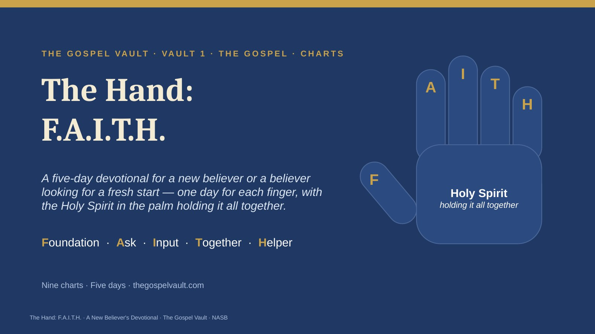
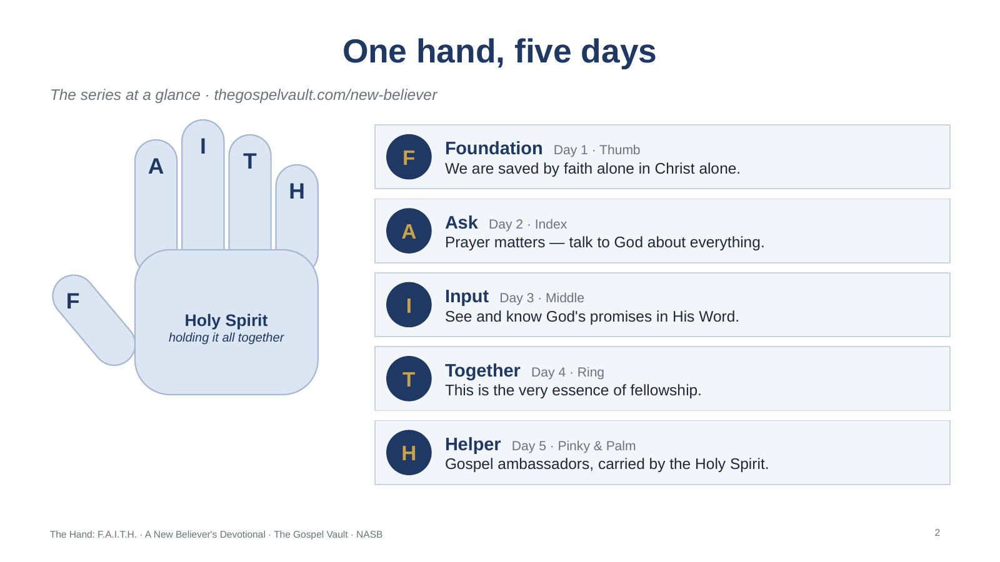
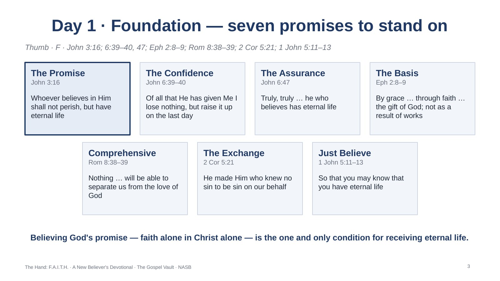
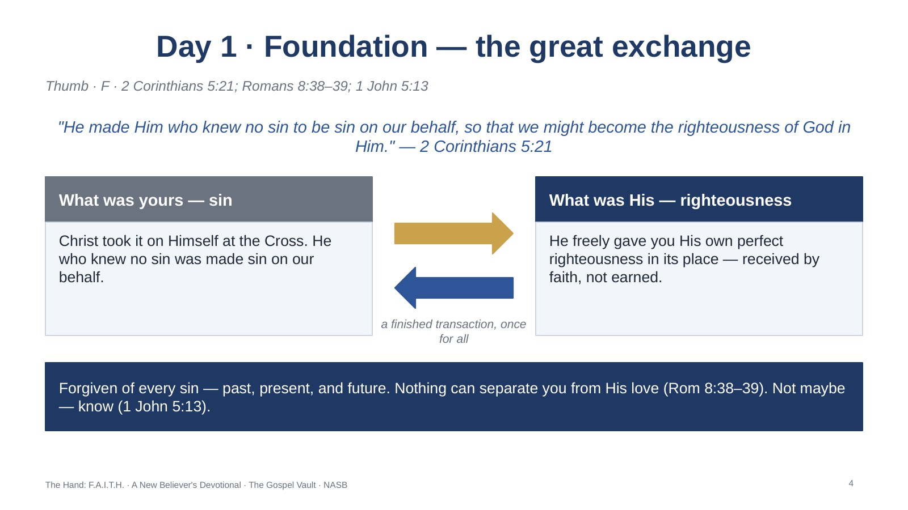
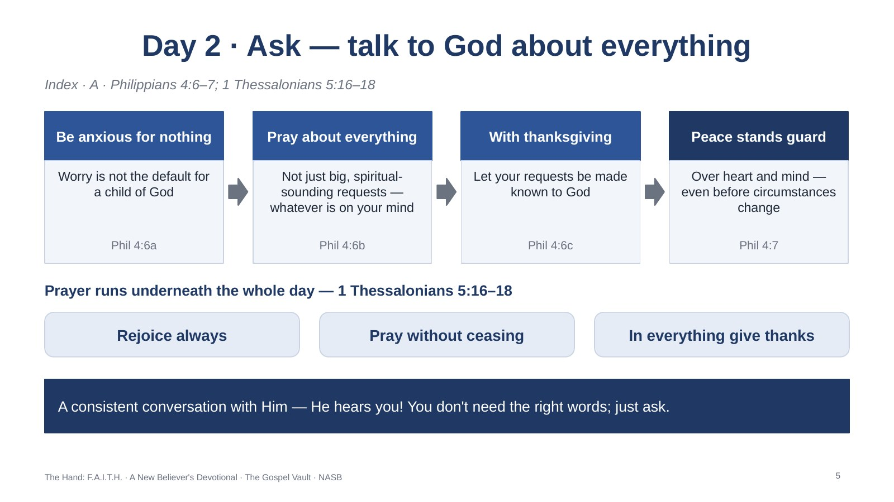
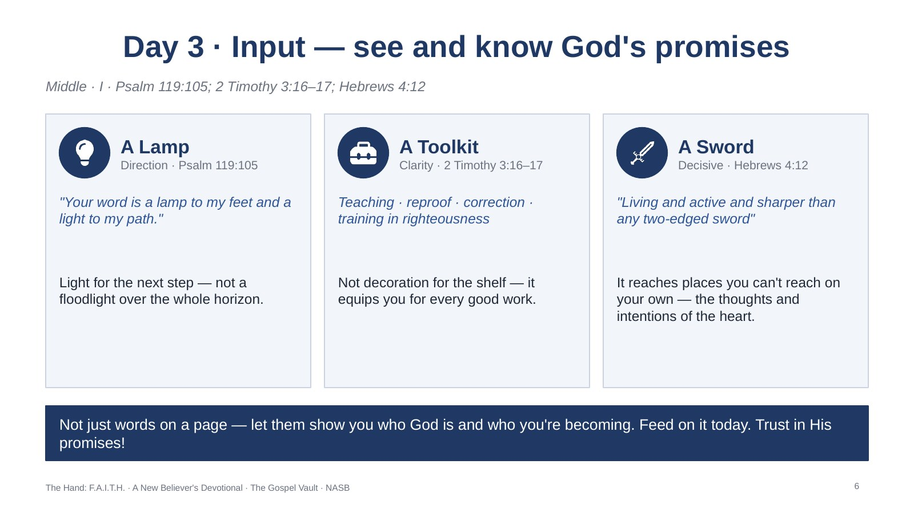
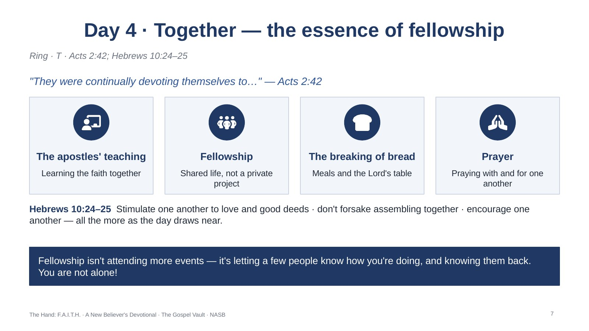
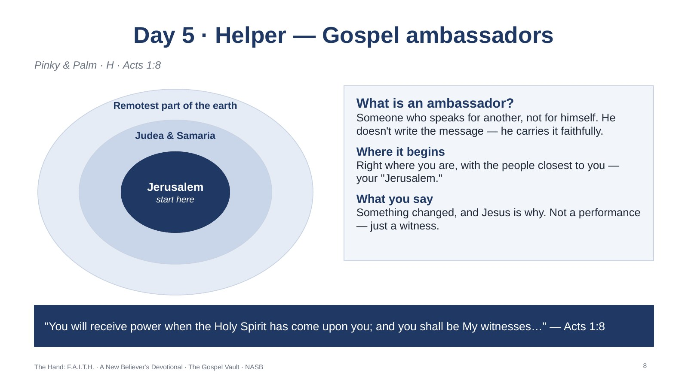
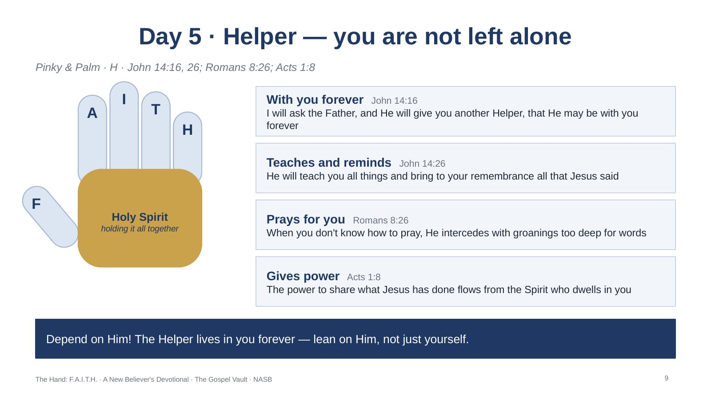
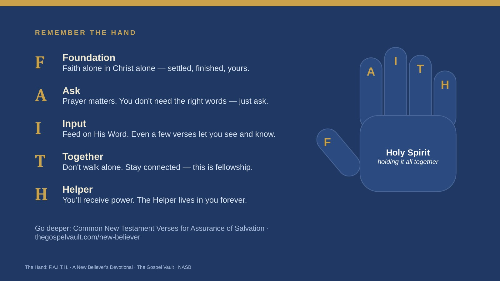

Vault 1 · The Gospel · Charts
Nine charts for the five-day devotional, one finger at a time: Foundation, Ask, Input, Together, and the Helper in the palm holding it all together. Click any chart to see it full size, or download them all.


The series at a glance · thegospelvault.com/new-believer
Hold up your own hand as you teach this. The thumb is the foundation everything else grips with — faith alone in Christ alone. The index finger points up in prayer; the middle finger, the tallest, is the Word; the ring finger is fellowship with other believers; and the pinky and palm are the Helper — the Holy Spirit, who carries the believer out as an ambassador and holds the whole hand together.

Thumb · F · John 3:16; 6:39–40, 47; Eph 2:8–9; Rom 8:38–39; 2 Cor 5:21; 1 John 5:11–13
Jesus doesn’t leave the offer vague. He states it in John 3:16, repeats it in John 6:40, and states it plainly again in John 6:47: he who believes has eternal life. Faith at its very essence is trusting God at His word; since it is His promise, it is not based on something we do to earn (Ephesians 2:8–9). Salvation is a gift and the very foundation of God’s promise to the one believing in Jesus.

Thumb · F · 2 Corinthians 5:21; Romans 8:38–39; 1 John 5:13
Here is why the foundation is pure gift: Christ took what was yours — sin — and in exchange freely gave you what was His — His own perfect righteousness. This is a finished transaction He accomplished once for all; faith simply receives it. Because of what Jesus finished on the Cross — He died for your sins and rose on the third day — the promise of eternal life is yours, and nothing moves you off it (Romans 8:38–39; 1 John 5:13).
For reflection:
1. Which promise do you need to hear again today: that Jesus loses none of His own (John 6:39), or that nothing can separate you from His love (Romans 8:38–39)?
2. 2 Corinthians 5:21 says Christ took your sin and gave you His righteousness — what does that exchange mean for how you see yourself today?

Index · A · Philippians 4:6–7; 1 Thessalonians 5:16–18
Notice the word "everything" in Philippians 4:6 — not just the big, spiritual-sounding requests. The promise of 4:7 isn’t that the problem disappears the moment you pray; it’s that the peace of God stands guard over you in the middle of it. Paul takes it further in 1 Thessalonians 5:16–18: prayer isn’t a single event you schedule but a constant turning toward God that runs underneath the whole day.
For reflection:
1. What’s one specific thing you’ve been carrying that you haven’t actually said out loud to God yet?
2. What would it look like to "pray without ceasing" in the middle of an ordinary day?

Middle · I · Psalm 119:105; 2 Timothy 3:16–17; Hebrews 4:12
The psalmist doesn’t ask for a floodlight over the whole horizon — just a lamp for the next step (Psalm 119:105). Paul tells Timothy Scripture is a whole toolkit: profitable for teaching, reproof, correction and training in righteousness, equipping the man of God for every good work (2 Timothy 3:16–17). Hebrews goes further: the Word is living and active, able to judge the thoughts and intentions of the heart (4:12). That’s what it means to see and know God’s promises.
For reflection:
1. Where in your life right now do you most need light for the next step, not the whole path?
2. What’s one small habit that could make opening Scripture something you do daily, not occasionally?

Ring · T · Acts 2:42; Hebrews 10:24–25
The very first believers didn’t figure out the Christian life solo (Acts 2:42): a shared rhythm of teaching, relationship, meals and prayer. That’s why Hebrews 10:24–25 doesn’t treat gathering as optional — you need other people’s encouragement, and they need yours, more than either of you might admit.
For reflection:
1. Who is one person or small group you could reach out to this week, instead of processing this alone?
2. What’s held you back so far from getting connected — busyness, fear, or something else?

Pinky & Palm · H · Acts 1:8
An ambassador is someone who speaks for another, not for himself. The assignment begins right where you already are, with the people closest to you — your "Jerusalem" — before it ever reaches farther (Acts 1:8). You don’t need to have everything figured out theologically to represent Him well; you just need to be willing to say what’s true: something changed, and Jesus is why.
For reflection:
1. Who is one person close to you — your "Jerusalem" — you could share your story with this week?

Pinky & Palm · H · John 14:16, 26; Romans 8:26; Acts 1:8
Jesus promised another Helper, to be with you forever (John 14:16). The same Spirit teaches you all things and brings to remembrance all that Jesus said (John 14:26), and intercedes for you when you don’t even know how to pray (Romans 8:26). The power to share what Jesus has done was never yours to manufacture; it flows from the Spirit who dwells in you — out to every part of your life, including the one that tells your story. That is why He sits in the palm: He holds the whole hand together.
For reflection:
2. Where have you been trying to live or speak as an ambassador in your own strength instead of leaning on the Spirit’s help?
3. What’s one thing you need the Spirit to teach, remind, or pray for you right now?

All five fingers, one closing line each
Close by walking the hand one more time, finger by finger, using each day’s closing line. Point new believers to the companion resource, Common New Testament Verses for Assurance of Salvation, on the same page.
The PowerPoint shows each chart as a full-slide picture, with the notes above on every slide.